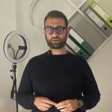

«Κάτι λίγο με πολλή αγάπη»: Μια εκπαιδευτικός εξομολογείται τη δική της Κρήτη
Συνέντευξη με επίκεντρο την προσωπική σχέση μιας εκπαιδευτικού με την Κρήτη.
Διαβάστε το δημοσίευμα ↗
Δημοσιογράφος και αρχισυντάκτης με εμπειρία σε τοπικά και ψηφιακά μέσα ενημέρωσης, με αντικείμενο τη σύνταξη ειδησεογραφικών άρθρων, την παραγωγή ρεπορτάζ, τις συνεντεύξεις και την επιμέλεια δημοσιογραφικού περιεχομένου. Διετέλεσε αρχισυντάκτης στο AlanaSports, όπου είχε την ευθύνη της δημιουργίας, της οργάνωσης και της λειτουργίας του αθλητικού ενημερωτικού site. Στο DayNight.gr εργάζεται ως δημοσιογράφος, με αντικείμενο τη σύνταξη, την επιμέλεια, τον προγραμματισμό και τη δημοσίευση άρθρων, καθώς και τη διαχείριση περιεχομένου στα social media. Παράλληλα, έχει συνεργαστεί με τοπικούς αθλητικούς συλλόγους στον τομέα της επικοινωνίας.
Δημοσιογράφος. Σύνταξη, επιμέλεια, προγραμματισμός και δημοσίευση άρθρων, καθώς και διαχείριση περιεχομένου στα social media.
Αρχισυντάκτης. Δημιουργία, οργάνωση και λειτουργία αθλητικού ενημερωτικού site.
Δημοσιογραφία και αθλητικό ρεπορτάζ.
Αθλητικός συντάκτης.
Συνέντευξη με επίκεντρο την προσωπική σχέση μιας εκπαιδευτικού με την Κρήτη.
Διαβάστε το δημοσίευμα ↗Αθλητική κάλυψη των αποτελεσμάτων των ομάδων του Ρεθύμνου στη Γ΄ Εθνική.
Διαβάστε το δημοσίευμα ↗Τοπικό ειδησεογραφικό ρεπορτάζ, το οποίο έχει επισημανθεί ως αποκλειστικό από τον συντάκτη.
Διαβάστε το δημοσίευμα ↗Κοινωνικό θέμα γύρω από τις δημογραφικές προοπτικές της χώρας.
Διαβάστε το δημοσίευμα ↗Ανθρώπινη και ιστορική αφήγηση μέσα από τη διαδρομή ενός ανθρώπου που υπηρέτησε την εκπαίδευση και τη δημοσιογραφία.
Διαβάστε το δημοσίευμα ↗Συνεργασίες σε γραφεία Τύπου και στην επικοινωνία τοπικών αθλητικών συλλόγων.
Αγγλικά: καλό επίπεδο γνώσης (χωρίς επίσημη πιστοποίηση).
Επιλεγμένα βίντεο που δημοσιεύτηκαν στον λογαριασμό του DayNight.gr.
Οι απευθείας σύνδεσμοι Facebook και LinkedIn μπορούν να προστεθούν μόλις έχουμε τα ακριβή URL των προφίλ.